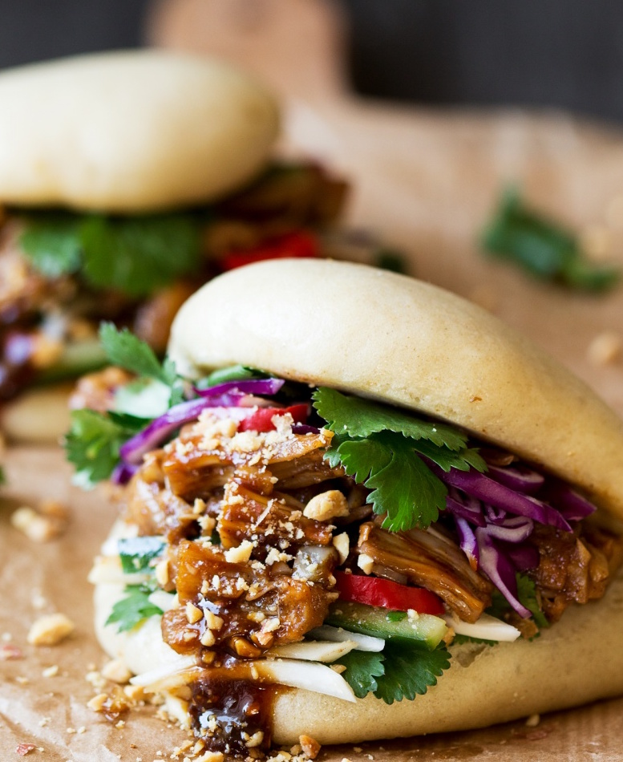

VEGAN BAO
Baozi, or bao, is a type of filled bun or bread-like dumpling in various Chinese cuisines. There are many variations in fillings and preparations. In its bun-like aspect it is very similar to the traditional Chinese mantou.